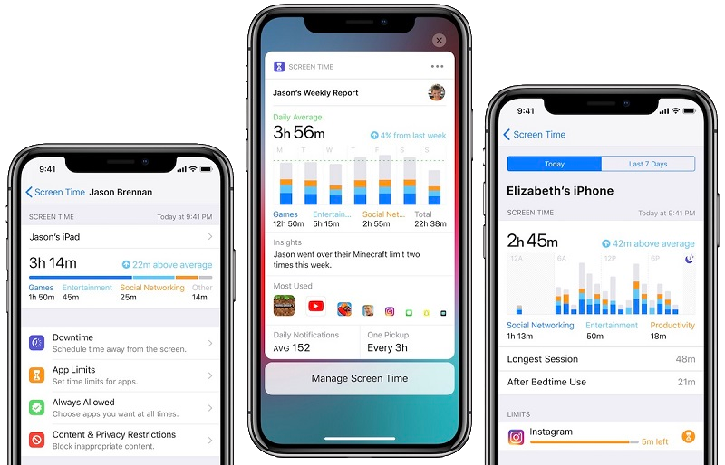

- Fag:
- Klassetrin:
- Varighed:
- Matematik.
- 7.kl - 8.kl.
- Ca. 5 lektioner.
Indhold
Dette forløb omhandler statistisk analyse ved hjælp af Excel. I dette forløb skal I arbejde med dataanalyse ved at indsamle statestik over personlig forbrug af forskellige sociale medier. Datasættet som eleverne skal arbejde med, indsamles i ugen op til.

Kapitel 1
Eget Skræmforbrug
Under dette link er der vist 2 eksempler på hvordan data kan sammenlignes.
I navigationsbare i toppen af denne side kan I se en menu "/excelark". Herinde kan I downloade et forberedt elevark til indtastning af jeres daga. Elevarket er formateret til at indeholde tids-værdier, men det kan være nødvendigt at tilpasse enkelte celler.
Kapitel 4
Præsentation for Årgangen
Fredag mødes vi på læringstrappen i 5 lektion og udvælger nogle grupper, som skal vise enten deres svar på opgave 2 eller 3.